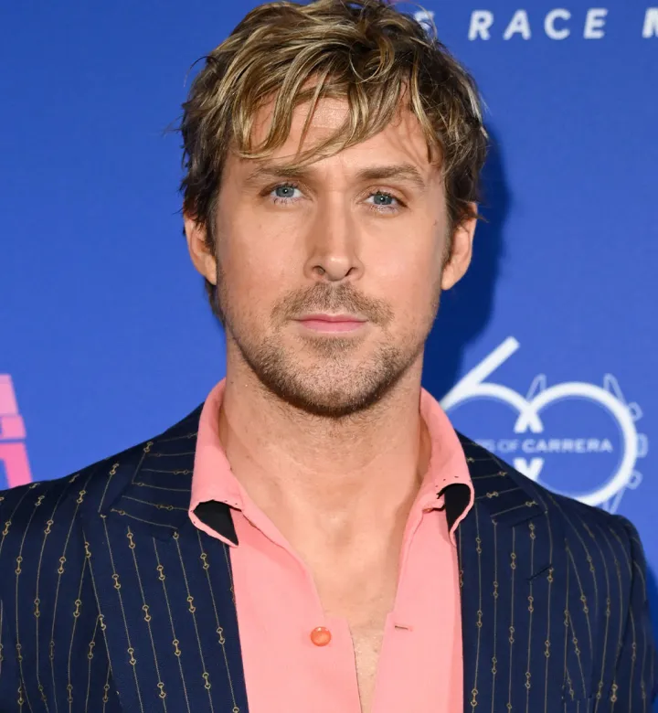
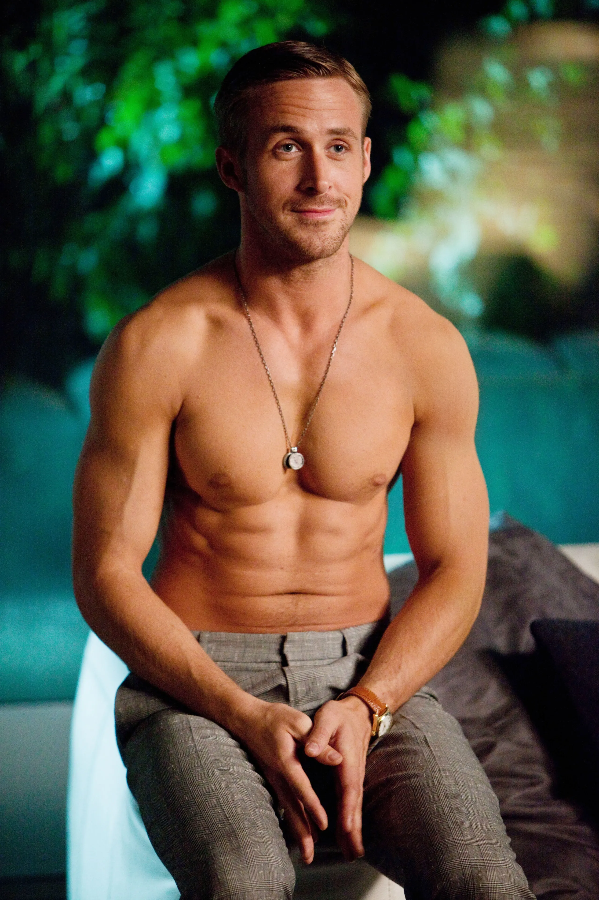

|
Ryan Gosling's career took off early with his breakthrough performance in the 2004 romantic drama "The Notebook," where he showcased his versatility as an actor. The film, directed by Nick Cassavetes, received widespread acclaim for its touching love story, and Gosling's convincing portrayal of Noah earned him a Teen Choice Award. (Source: IMDb - The Notebook)
In 2007, Gosling received a well-deserved Academy Award nomination for Best Actor for his role in "Half Nelson." The film, directed by Ryan Fleck, follows Gosling's character, a dedicated inner-city schoolteacher with a secret struggle. The nomination solidified Gosling's status as a serious and talented actor in Hollywood. (Source: IMDb - Half Nelson) Gosling reached new heights in 2016 with his lead role in the musical film "La La Land," directed by Damien Chazelle. His charismatic performance as Sebastian, a jazz musician, earned him a Golden Globe Award for Best Actor in a Musical or Comedy. The film itself went on to win numerous awards and became a critical and commercial success. (Source: IMDb - La La Land) |
 |
| Movie | Release date | IMDb Rating | |
|---|---|---|---|
| 1 | The Notebook | 2004 | 7.8 |
| 2 | La La Land | 2016 | 8.0 |
| 3 | Drive | 2011 | 7.8 |
| 4 | Cray, Stupid, Love | 2011 | 7.4 |
| 5 | Blade Runner 2049 | 2017 | 8.0 |
| 6 | Half Nelson | 2006 | 7.2 |
| 7 | Blue Valentine | 2010 | 7.4 |
| 8 | The Big Short | 2015 | 7.8 |
| 9 | First Man | 2018 | 7.3 |
| 10 | The Nice Guys | 2016 | 7.4 |
|  |
Beyond acting, Gosling ventured into directing with his debut film, "Lost River," released in 2014. The fantasy-drama showcased Gosling's creativity and unique vision behind the camera. Although the film received mixed reviews, Gosling's courage to step into the director's chair demonstrated his commitment to exploring various facets of the film industry. (Source: IMDb - Lost River)
Gosling's commitment to his roles extends beyond the screen. In 2018, he portrayed Neil Armstrong in the biographical drama "First Man," directed by Damien Chazelle. Gosling's dedication to authenticity led him to champion environmental causes during the film's production, promoting sustainability on set. This highlighted his passion for making a positive impact beyond the entertainment industry. (Source: IMDb - First Man) Ryan Gosling actively engages in philanthropy and social causes. His involvement with organizations like PETA and Invisible Children reflects his commitment to animal rights and the well-being of children affected by conflict. Gosling's efforts contribute to raising awareness and supporting initiatives that aim to create positive change in the world. (Source: Ryan Gosling - Philanthropy) |
| 🢀 | 🢂 |